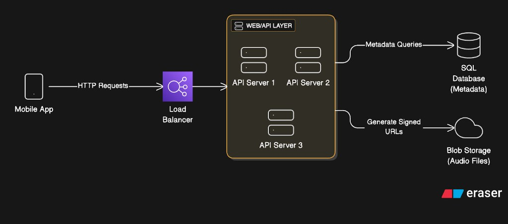
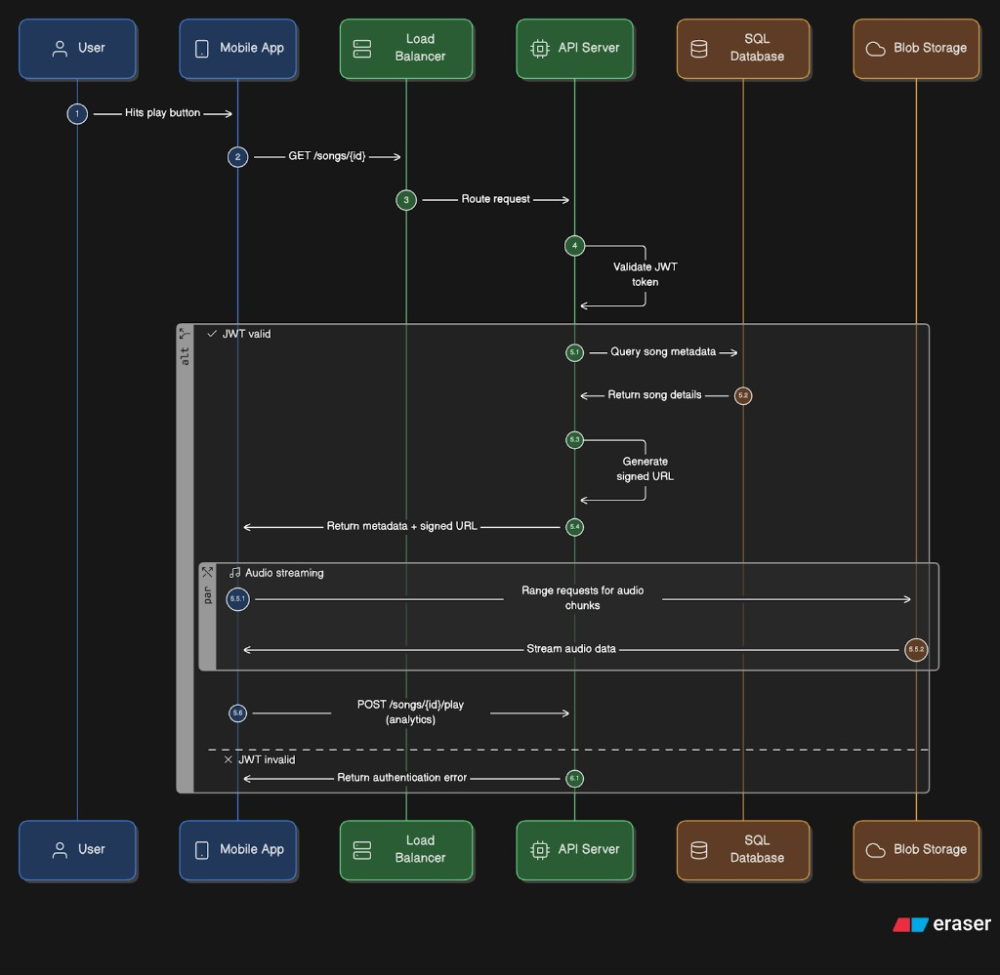

Summary
A comprehensive guide to designing a music streaming platform akin to Spotify, focusing on system design principles. The design process is broken down into seven clear steps: requirements and capacity planning, architecture design, API and database design, scalability considerations, and insights into skillset for senior engineering roles.
1. Requirements and Capacity Planning
Target Scale
- 500,000 users initially
- 30 million songs
Core Features
- Artists upload songs
- Users search, play songs, create/manage playlists
- User profiles to maintain playlists
- Basic monitoring: health checks, error tracking, performance metrics
Supported Audio Formats
OGG and AAC, with bitrates:
- 64 kbps — mobile data saving
- 128 kbps — standard users
- 320 kbps — premium users
Average file size: ~3 MB per song (128 kbps quality).
Storage Estimates
| Type | Estimate |
|---|---|
| Raw audio data (30M songs) | ~90 TB |
| Metadata per song (~100 bytes) | ~3 GB total |
| User metadata (~1 KB per user) | ~0.5 GB total |
Bandwidth Considerations
- Average listening time: 3.5 minutes
- Each user streams ~10–15 songs daily
- Audio streaming dominates both storage and bandwidth costs
- Egress costs are significant
2. High-Level Architecture

- Client layer: Mobile app (and web) sends HTTP requests for playback, search, and playlists
- Load balancer: Spreads traffic across API servers for availability and capacity
- Web/API layer: Stateless API servers — JWT authentication, business logic, orchestration
- SQL database (metadata): Song titles, artists, albums, internal object keys/paths
- Blob storage (audio): Large audio objects; APIs issue short-lived signed URLs so the client streams directly from storage
- CDN (optional): Edge caching closer to users; invalidate on catalog updates
3. System Workflows
Now that we’ve covered the high-level architecture, here’s how a typical read request flows through the system.
Read workflow
When the user plays a song:
- User hits play → App sends
GET /songs/{id}. - API authentication → API server validates the JWT.
- Metadata lookup → API server queries the SQL database for song details (metadata).
- URL generation → API server creates a signed URL for blob storage access.
- Audio streaming → App fetches chunks of audio (HTTP range requests) directly from blob storage using adaptive streaming (HLS or DASH), enabling smooth playback, automatic bitrate switching, and broad device support.
- Analytics → App periodically calls
POST /songs/{id}/playto track plays and listening time.

POST /songs/{id}/play for analytics.Write workflow (upload song)
| Step | Description |
|---|---|
| 1 | Artist uploads via POST /songs with metadata |
| 2 | Load balancer routes the request |
| 3 | Validate file size and format |
| 4 | Store audio file in blob storage |
| 5 | Extract and save metadata in SQL |
| 6 | Organize objects hierarchically (e.g. artist/album/song) |
| 7 | Invalidate CDN caches if applicable |
| 8 | Respond with upload success |
4. API Design Highlights
| Endpoint | Purpose |
|---|---|
| GET /search?query=&type=&limit=&offset= | Search with type filtering and pagination |
| GET /songs/trending | Trending songs (optional filters) |
| GET /artists/{id}/songs | Artist's songs |
| GET /songs/{id} | Song metadata and streaming URL |
| POST /plays | Create playlist (name, visibility) |
| PUT /plays/{id}/songs | Add/remove songs (song IDs, position) |
| GET /plays/{id} | Get playlist details (optionally with songs) |
| GET /users/me/plays | Fetch user playlists |
| GET /users/me/likes | Fetch liked songs |
| POST /users/me/follow | Follow artist (artist ID) |
RESTful conventions with plural resource names and consistent query parameters.
5. Data Storage Design
Blob Storage
AWS S3 or Azure Blob for immutable audio files.
Relational Database (PostgreSQL/MySQL) — Metadata Tables
- Users: user ID, email, password hash, subscription type, timestamps
- Playlists: playlist ID, owner ID (user), name, created date
- Playlist items: Join table linking playlists and songs (position, timestamp)
- Songs: song ID, title, duration, file URL
- Artists: artist ID, name, country
- Artist-Song: Join table linking songs and artists
Index on frequently queried columns: song titles, artist names, playlist-song relationships.
6. Scalability Considerations
Scale to 50 million users and 200 million songs:
- Metadata: ~20 GB (songs) + 50 GB (users)
- Audio storage: ~600 TB (excluding replicas and versions)
Scaling Strategies
- CDN edges distributed globally for faster content delivery
- Multiple load balancers in different regions
- Stateless API servers for easy horizontal scaling
- Database: Read-write separation (leader + read replicas); sharding by region (US, Europe); partition songs by artist ID ranges
- Blob storage replication across regions
- LRU cache eviction for CDN
Start simple and evolve — avoid premature optimization.
7. Skillset to Become a Senior Engineer
System design as a pyramid:
- Base: Planning and requirement analysis (blueprinting)
- Middle: Technical stack selection (database, cache, storage)
- Top: Coding/implementation (smallest, least brainpower-intensive)
Senior engineers excel in: Understanding requirements, capacity estimation, choosing architecture and tech, thinking before coding.
Common pitfall: Mid-level developers often start coding without a clear design or plan.
Key Insights
- Audio streaming dominates storage and bandwidth costs — efficient object storage and CDN are critical
- Stateless API servers and load balancers enable straightforward horizontal scaling
- SQL preferred for metadata due to complex relational queries and joins
- Signed URLs provide secure access to audio files
- Caching and CDN invalidation crucial for performance and data freshness
- Scaling: read-write splitting, sharding, geographic replication
- Senior skills emphasize planning and problem understanding over coding
Technical Terms
| Term | Definition |
|---|---|
| Blob Storage | Object storage for large binary files (audio, video) |
| Signed URL | Temporary URL granting limited-time access to a resource |
| JWT | JSON Web Token — compact format for securely transmitting authentication data |
| CDN | Content Delivery Network — distributed servers caching content closer to users |
| LRU Cache | Least Recently Used eviction — removes oldest accessed items first |
| Sharding | Horizontal partitioning of database tables across servers/regions |
| Read Replica | Database instance for reads, synced with primary write database |